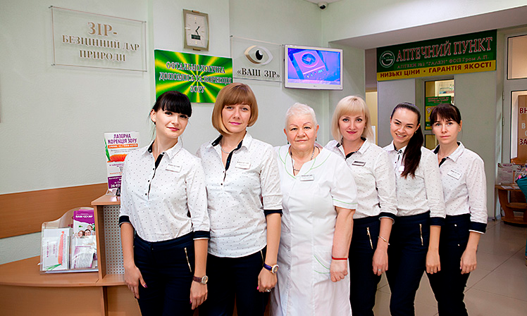
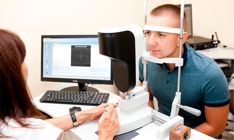
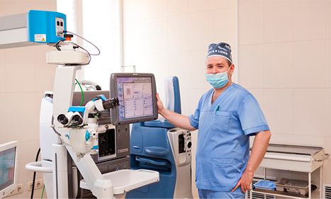
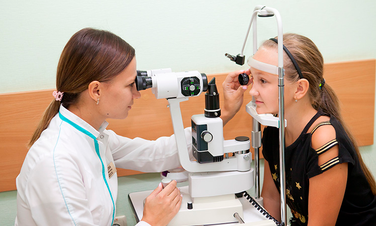
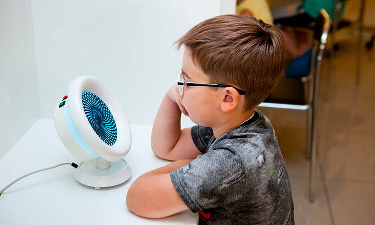

Кривой Рог, пр. Героев-подпольщиков 36Карта проезда
График работыПн-Пт: 09:00-18:00,Сб: 09:00-15:00
Медицинский центр Ваш Зір оснащен новейшими технологиями, уникальной комбинацией лучшего в отрасли диагностического и хирургического оборудования и уникальными результатами лечения.
Все наши доктора – высококвалифицированные специалисты. Медицинский центр современной офтальмологической помощи ВАШ ЗІР – постоянно обучает своих специалистов. В Медицинском центре ВАШ ЗІР работают доктора и кандидаты медицинских наук, специалисты высших категорий. Обратившись в наш центр, Вы всегда можете рассчитывать на качественную и квалифицированную помощь.
Партнерами медицинского центра являются производители лучшего в мире лазерного оборудования для кераторефракционной хирургии, лучшие производители и поставщики лекарственных препаратов, опытные врачи. офтальмологи.
В основе эффективного лечения в медицинском центре Ваш Зір — индивидуальный подход к каждому пациенту и контроль качества на всех этапах лечения. Уникальная диагностика, позволяющая предложить пациенту лучшее решение проблем зрения, предполагает этапное обследование на самом современном оборудовании и консультации врачей с получением подробных рекомендаций и прогноза по качеству зрения после операции. При этом врач строит схему лечения с учетом Ваших индивидуальных особенностей.
В медицинском центре Ваш Зір для лечения дальнозоркости, близорукости, астигматизма, уникальный комплекс методик коррекции пресбиопии (возрастной дальнозоркости), пациент имеет выбор между самыми современными, эффективными и безопасными методиками. После коррекции осуществляется бесплатное диспансерное наблюдение в течение полугода.
Операции по удалению катаракты проводятся методом ультразвуковой факоэмульсификации, под местной анестезией, через микро разрез с использованием новейшего операционного оборудования, индивидуально подбираются и имплантируются лучшие модели ИОЛ.
Для лечения глаукомы в медицинском центре применяются поддерживающее лечение с уникальной методикой контроля зрительных функций; селективная лазерная трабекулопластика (СЛТ), непроникающая глубокая склерэктомия (НГСЭ); синусотрабекулэктомия (СТЭК); имплантация дренажей; вискоканалостомия.
Медицинский центр отлично зарекомендовал себя в ортолечении, ортокератологии и детской офтальмологии.
Наш медицинский центр принимает пациентов без ограничений по возрасту – это и дети с первых дней жизни, и люди пожилого возраста.
Вся техника и материалы, используемые нашими специалистами, имеют европейские сертификаты и прошли необходимую регистрацию в Министерстве здравоохранения Украины. Уровень оснащенности нашего медицинского центра является ориентиром для ведущих европейских глазных центров.
Операции проходят амбулаторно (Вам не нужно ложиться в стационар), длятся считанные минуты и совершенно безболезненны.
Мы наблюдаем каждого пациента после операции до полного выздоровления. У Вас есть возможность в любое время связаться с врачом.
Ответы вы можете получить на бесплатной консультации у наших виртуозов, которые подберут для вас наиболее оптимальное решение.